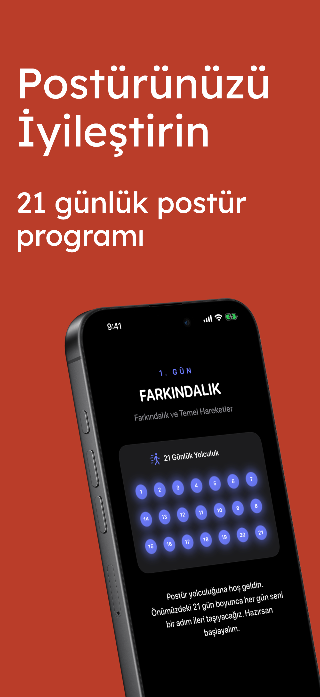
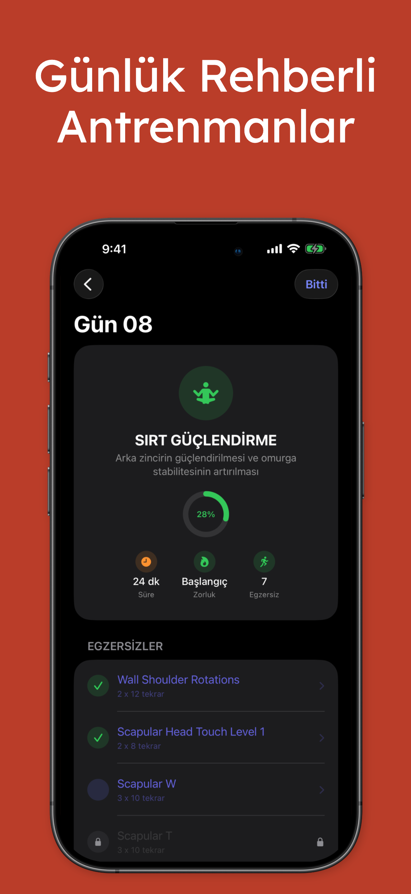
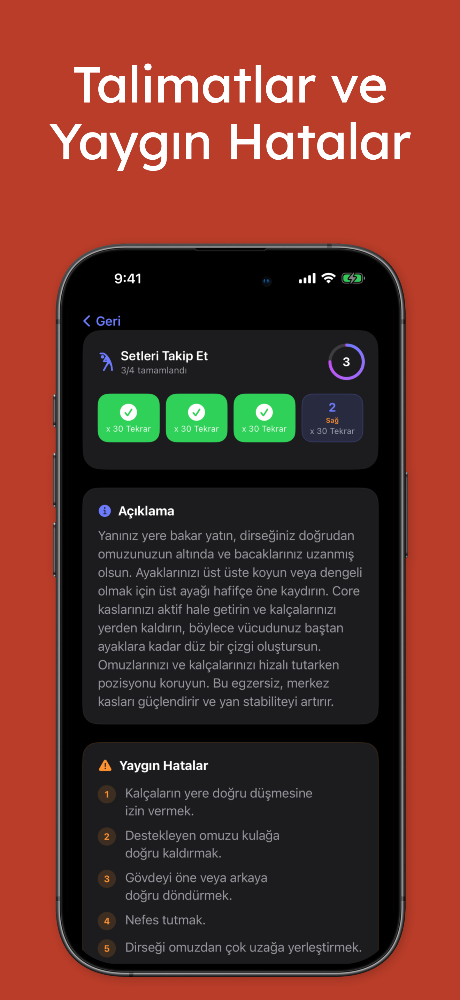
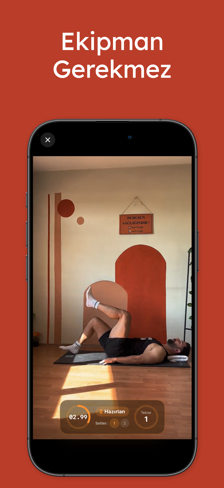
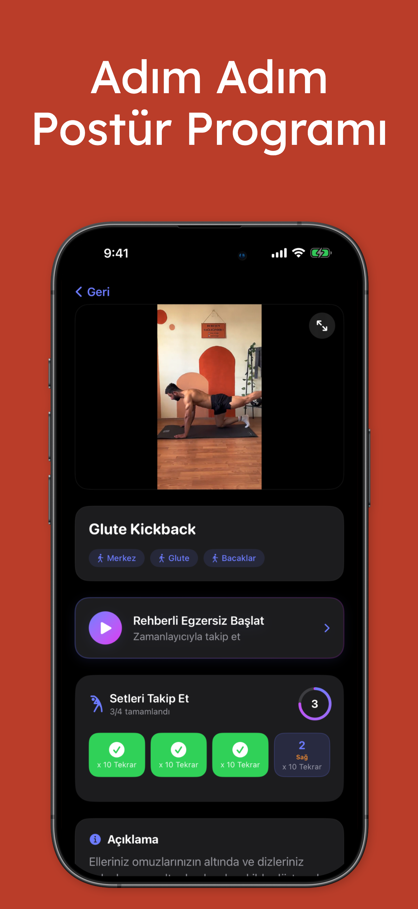
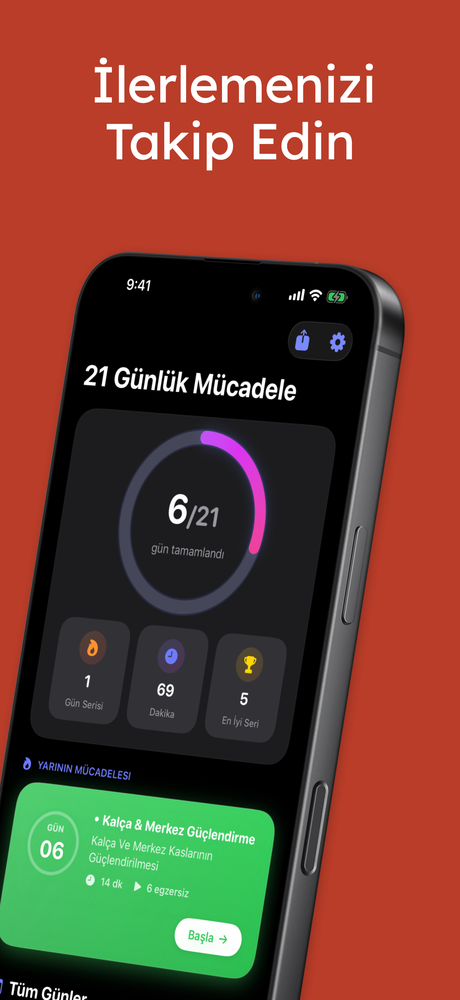
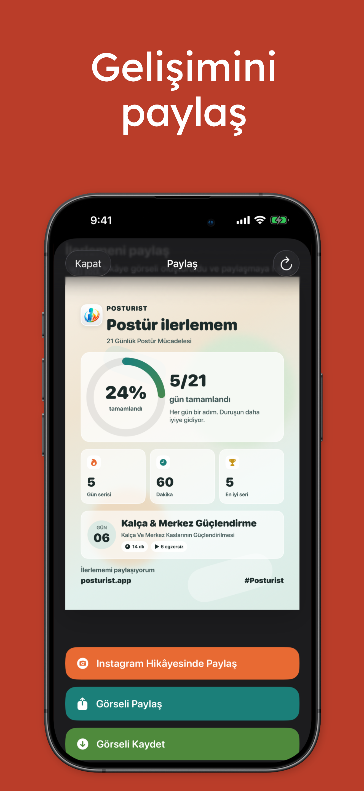

Net bir duruş yolculuğu takip et
Farkındalıktan güçlenmeye uzanan basit bir ilerleme, kullanıcıların istikrarlı kalmasına ve sırada ne olduğunu bilmesine yardımcı olur.
Posturist; yapılandırılmış bir meydan okuma, net egzersiz rehberleri, ilerleme takibi ve motive edici günlük seanslarla duruşunu adım adım geliştirmenize yardımcı olur.

Farkındalıktan güçlenmeye uzanan basit bir ilerleme, kullanıcıların istikrarlı kalmasına ve sırada ne olduğunu bilmesine yardımcı olur.
Egzersiz ekranları, sayaçlar, tekrarlar ve set takibi her antrenmanı baştan sona kolayca takip etmeyi sağlar.
Tamamlanma istatistikleri, seriler ve paylaşılabilir ilerleme kartları istikrarı görünür ve ödüllendirici hale getirir.
Uygulama yapısı ve ekran görüntülerine göre Posturist, rehberli bir alışkanlık oluşturma ürünü gibi hissettiriyor: temiz bir onboarding akışı, meydan okuma temelli deneyim, günlük bildirimler ve güçlü bir ilerleme odağı.


Minimal tasarım, koyu arayüz, güçlü ilerleme görselleri ve pratik egzersizler ürünü premium ve ulaşılabilir hissettiriyor.
Evde, molada ya da antrenman sonrası gerçek hayata uyum sağlayan kısa seanslar.
Egzersizler bir plan içinde düzenlenir; karar yorgunluğunu azaltır ve kullanıcıların yolda kalmasına yardımcı olur.
Tamamlama halkaları, seriler, dakikalar ve yaklaşan seanslar motivasyonu yüksek tutar.
Açıklamalar ve yaygın hatalar, hareketlerin daha güvenli ve daha etkili yapılmasına yardımcı olur.
Meydan okuma akışı, rehberli egzersizler, hareket detayları ve paylaşılabilir ilerleme görünümlerine hızlı bir bakış.




İstersen bu landing page'i daha sonra App Store bağlantıları, yorumlar, SSS, gizlilik sayfası ve iletişim formu ile genişletebilirim.